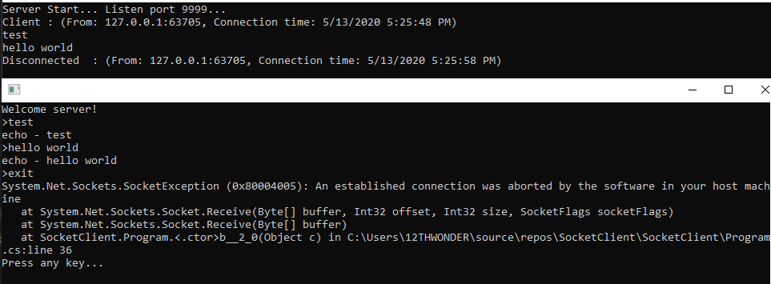

こんにちは。明月です。
この投稿はC#でソケット(Socket)通信をする方法に関する説明です。
プログラム言語で通信というのは動いているプロセスやプログラムが他のプロセスやプログラムとデータを送受信することです。
その中でソケット通信とはOSのネットワークを利用して他のプログラムやランケーブルを通って他のシステムまで通信することです。
実は通信するためには各端末の規格やEndPointなどをすべて設定しなければならないですが、そのことをすべてOS側で実装されているので、プログラム言語としてはただソケット規約を利用してデータを送受信すればいいです。
そのことで詳しいことはOS参照モデルを参考すると理解しやすいと思います。
link - OSI参照モデル
ソケットの使用方法と流れに関して説明します。
ソケットはサーバがローカルIPをもってPortを開いて(Bind)クライアントの接続を持っています。(Listen)
そしてクライアントはサーバIPアドレスとポート番号で接続(Connection)して連結すれば、サーバとクライアントは「Send」、「Recieve」の形でパケットを送信、受信します。
お互いに通信がおわれば、「close」で接続を切ります。

参考 - https://www.ibm.com/support/knowledgecenter/ja/ssw_ibm_i_71/rzab6/howdosockets.htm
一応、サーバプログラムを作成してコマンドのTelnetを利用して接続します。
using System;
using System.Text;
// ソケットを利用するためのNamespaceを宣言
using System.Net;
using System.Net.Sockets;
using System.Threading;
namespace SocketServer
{
class Program
{
// 改行コード
private static char CR = (char)0x0D;
private static char LF = (char)0x0A;
// 実行関数
static void Main(string[] args)
{
// ネットワーク情報を設定(ポート 9999)
IPEndPoint ipep = new IPEndPoint(IPAddress.Any, 9999);
// ソケットインスタンスを生成する。
Socket server = new Socket(AddressFamily.InterNetwork, SocketType.Stream, ProtocolType.Tcp);
// ソケットインスタンスにネットワークの情報を設定
server.Bind(ipep);
// Acceptする前のキューに待機するコネクション数
server.Listen(20);
// コンソール出力
Console.WriteLine("Server Start... Listen port 9999...");
try
{
// マルチ待機するために無限ループになる。
while (true)
{
// Clientから接続別にスレッドを生成する。
// Clientのスレッドをプルで管理する。
ThreadPool.QueueUserWorkItem((c) =>
{
// 改行までのデータを格納するバッファ
StringBuilder buffer = new StringBuilder();
// スレッドから受け取るパラメータをSocketタイプにキャスターする。
Socket client = (Socket)c;
// RemoteEndPointを取得する。
IPEndPoint remoteAddr = (IPEndPoint)client.RemoteEndPoint;
// 接続アドレス、ポートをコンソールに出力
Console.WriteLine($"Client : (From: {remoteAddr.Address.ToString()}:{remoteAddr.Port}, Connection time: {DateTime.Now})");
// Send関数 - Clientにメッセージを送信する。
Action<String> Send = (msg) =>
{
// Stringタイプをbyteタイプに変更
byte[] b = Encoding.ASCII.GetBytes(msg);
// Clientにメッセージ送信
client.Send(b, b.Length, SocketFlags.None);
};
// メッセージ送信
Send("Welcome server!\r\n>");
// Clientからメッセージを受信を待ち
try
{
while (true)
{
// バッファ設定
var b = new byte[1024];
// データを受信
client.Receive(b);
// byte[]タイプのデータをStringタイプに変更
string msg = Encoding.Default.GetString(b);
// 空欄データを除いてバッファにデータを合併
buffer.Append(msg.Trim('\0'));
// メッセージの末が改行なら
if (buffer.Length >= 2 && buffer[buffer.Length - 2] == CR && buffer[buffer.Length - 1] == LF)
{
// メッセージが「exit」なら接続終了
if ("exit\r\n".Equals(buffer.ToString(), StringComparison.OrdinalIgnoreCase))
{
// 接続終了
client.Disconnect(true);
break;
}
// メッセージをコンソールに出力
Console.Write(buffer.ToString());
// echoメッセージをClientに送信
msg = "echo - " + buffer.ToString() + ">\0";
// clientにメッセージ送信
Send(msg);
// バッファをクリア
buffer.Clear();
}
}
}
// Client側から強制接続がある場合
catch(SocketException e)
{
// エラー内容をコンソールに出力
Console.WriteLine(e);
}
finally
{
// ソケットを閉める
client.Close();
// 接続終了。メッセージ出力
Console.WriteLine($"Disconnected : (From: {remoteAddr.Address.ToString()}:{remoteAddr.Port}, Connection time: {DateTime.Now})");
}
// サーバAccept
}, server.Accept());
}
}
catch (Exception e)
{
// エラーが発生するとコンソールに表示
Console.WriteLine(e);
}
finally
{
// サーバ終了
server.Close();
}
}
}
}
実行すればコンソールに9999ポートでListenするとメッセージが表示されます。
これからTelnetを利用して接続します。
ここで127.0.0.1をローカルのIPにという意味です。9999はポートです。
最初に接続すればWeｌcomeメッセージが表示されます。その後にメッセージを送信すればechoメッセージが受信されます。
サーバのコンソールにはClientのメッセージが表示されます。

最終にexitメッセージを送信すると接続が切れます。
上のサーバを基準でC#でクライアントを作成しましょう。
using System;
using System.Text;
// ソケットを利用するためのNamespaceを宣言
using System.Net;
using System.Net.Sockets;
using System.Threading;
namespace SocketClient
{
// Socketクラスを継承した
class Program : Socket
{
// 改行コード
private static char CR = (char)0x0D;
private static char LF = (char)0x0A;
public Program() : base(AddressFamily.InterNetwork, SocketType.Stream, ProtocolType.Tcp)
{
// ネットワーク情報を設定(接続IP: localhost, ポート 9999)
IPEndPoint ipep = new IPEndPoint(IPAddress.Parse("127.0.0.1"), 9999);
base.Connect(ipep);
ThreadPool.QueueUserWorkItem((c) =>
{
try
{
// 改行までのデータを格納するバッファ
StringBuilder buffer = new StringBuilder();
while (true)
{
// バッファ設定
var b = new byte[1024];
// データを受信
Receive(b);
// byte[]タイプのデータをStringタイプに変更
string msg = Encoding.Default.GetString(b);
// 空欄データを除いてバッファにデータを合併
buffer.Append(msg.Trim('\0'));
// メッセージの末が改行なら
if (buffer.Length >= 3 && buffer[buffer.Length - 3] == CR && buffer[buffer.Length - 2] == LF && buffer[buffer.Length - 1] == '>')
{
// メッセージをコンソールに出力
msg = buffer.ToString();
Console.Write(msg);
// バッファをクリア
buffer.Clear();
}
}
}
// Server側から強制接続がある場合
catch (SocketException e)
{
// エラー内容をコンソールに出力
Console.WriteLine(e);
}
});
try
{
// コンソールから入力するためのループ
while (true)
{
// コンソールから入力を受ける。
string k = Console.ReadLine();
// サーバにメッセージを送信
Send(k + "\r\n");
// exitのコマンドなら終了
if (String.Equals("exit", k, StringComparison.OrdinalIgnoreCase))
{
break;
}
}
}
finally
{
// 接続を閉める
Close();
// ソケット終了を1秒を待つ。
Thread.Sleep(1000);
// コンソール出力
Console.WriteLine("Press any key...");
// どれがキーを押すと終了
Console.ReadKey();
}
}
// メッセージを送信関数
public void Send(String msg)
{
// Stringタイプのデータをbyteに変換する。
byte[] sendData = Encoding.ASCII.GetBytes(msg);
// メッセージ送信
Send(sendData, sendData.Length, SocketFlags.None);
}
// 実行関数
static void Main(string[] args)
{
// Programクラスはソケットクラスを継承したので、インスタンス生成だけで実行する。
new Program();
}
}
}
またサーバを起動します。
クライアントプログラムを起動します。
メッセージを送信して終了します。

メッセージの送受信は正常にできました。
サーバソースとクライアントソースの差はListen, Acceptで待機するかConnect関数で接続するかの差です。
上の例はSocketクラスをインスタンスして使うかSocketクラスを継承して使うかの差もありますが、基本的にSend、Receiveの流れは同じです。
最後にClientでエラーメッセージが発生しましたが、サーバかクライアントで接続する時に何処かで通信を切るので発生することです。エラーメッセージですが問題がないことです。
ここまでC#でソケット(Socket)通信をする方法に関する説明でした。
ご不明なところや間違いところがあればコメントしてください。
- [C#] ソケット(Socket)通信をする方法2020/05/13 17:37:13
- [C#] Thread(スレッド)2019/07/24 00:57:35
- [C#] 「IDisposable」と「using」2019/07/23 00:05:40
- [C#] ファイルシステム(File System) - FileStream、 Encoding、 Serializable2019/07/22 23:45:05
- [C#] ファイルシステム(File System) - FileInfo,DirectoryInfo2019/07/22 23:30:17
- [C#] MSDN(Microsoft Developer Network)2019/07/22 23:15:42
- [C#] Attribute(アトリビュート)2019/07/20 02:27:23
- [C#] Reflection(リフレクション)2019/07/20 02:22:03
- [C#] Objectタイプ、varタイプ(匿名タイプ)、dynamicタイプ2019/07/18 22:50:16
- [C#] Partial Type(クラス分割)、拡張メソッド2019/07/18 20:22:16
- [C#] Lamda(ラムダ)2019/07/17 23:06:42
- [C#] LINQ(リンク)-3 (Enumerableクラス)2019/07/17 20:57:00
- [C#] LINQ(リンク)-2 (メソッド式)2019/07/16 22:40:03
- [C#] LINQ(リンク)-12019/07/16 20:41:27
- [C#] event(イベント)2019/07/16 00:59:34
- [Python] 15. クラスを継承する方法2020/06/15 18:20:07
- [Python] 14. クラスプロパティ(Property)2020/06/12 17:45:13
- [Python] 13. クラス関数(class method)とダック・タイピング、そして特殊メソッド2020/06/11 19:42:29
- [Python] 12. クラス(Class)を使う方法2020/06/10 19:33:33
- [Python] 11. デコレーター（Decorator）を使う方法2020/06/09 17:27:18
- [Python] 10. モジュールとパッケージ(import)2020/06/08 19:07:50
- [Python] 09. 例外処理する方法2020/06/05 17:11:47
- [Python] 08. ジェネレータ(Generator)2020/06/04 18:46:08
- [Python] 07. globalとnonlocal2020/06/03 20:34:49
- [Python] 06. 関数(function) - インライン関数、callbak、ラムダ(lambda)そしてクロージャ2020/06/02 20:51:22
- [Python] 05. コンプリヘンション(Comprehension)を使用する方法2020/06/01 19:38:58
- [Python] 04. 制御文(if, while, for, break, continue)とインデント2020/05/29 21:09:08
- [Python] 03. Pythonでリスト(list)とタプル(tuple)、そしてディクショナリ(dictionary)、セット(set)2020/05/27 18:49:08
- [Python] 02. データタイプ、変数宣言そしてコメントする方法2020/05/26 18:16:52
- [Python] 01. Python3をインストールする方法(Anacondaインストール)2020/05/25 19:02:44